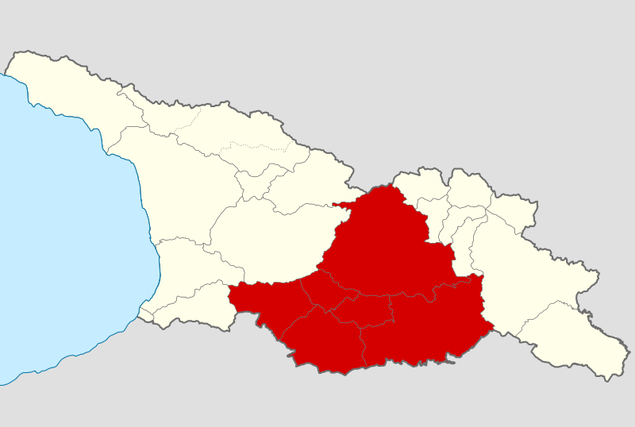
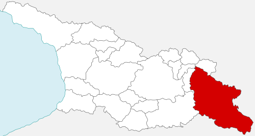
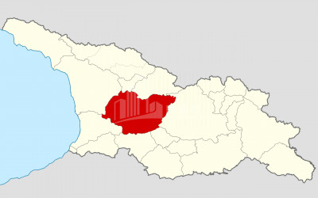

ქართლი — მხარე აღმოსავლეთ საქართველოში. სახელწოდება მომდინარეობს იმ მთისაგან, სადაც ლეონტი მროველის ცნობით დაემკვიდრა ქართველთა ლეგენდარული ეთნარქი - ქართლოსი. მთა “ქართლი” იქცა ქალაქ “ქართლად” (მოიცავდა მცხეთას და წიწამურს), შემდეგ შეიქმნა “დიდი ქართლი”, აქედან კი სახელწოდება მთელ მხარეზე გავრცელდა.
 გაიგეთ მეტი!კახეთი — ისტორიული რეგიონი აღმოსავლეთ საქართველოში. მოიცავს მდინარე ივრის შიდა და ქვემო დინებისა და მდინარე ალაზნის აუზს. კახეთის ცალკეულ მხარეებს ეწოდებოდა გარეკახეთი (მდინარე ივრის შუა წელი), ქიზიყი (მდინარე ივრის ქვემო წელი), შიგნიკახეთი (მდინარე ალაზნის მარჯვენა სანაპირო) და გაღმამხარი (მდინარე ალაზნის მარცხენა სანაპირო). უძველეს დროს კახეთი გაცილებით მცირე ტერიტორიას მოიცავდა (მდინარე ივრის ზემო წელი თიანეთსა და უჯარმას შორის). ცენტრი ჩელეთი (ჟალეთი). IV საუკუნიდან — უჯარმა. კახეთზე გადიოდა მნიშვნელოვანი გზები.
 გაიგეთ მეტი!იმერეთი — დასავლეთ საქართველოს ერთ-ერთი ისტორიულ-გეოგრაფიულ მხარე, ამჟამად იმერეთის მხარის ნაწილი. ვრცელი მნიშვნელობით იგი დასავლეთ საქართველოს ისტორიული სახელწოდებაა, ისევე როგორც ძველი კოლხეთი, ეგრისი, აფხაზეთი. საკუთრივ იმერეთი შემოსაზღვრულია აღმოსავლეთით ლიხის ქედით, დასავლეთით ცხენისწყლით, ჩრდილოეთით კავკასიონის ქედით და სამხრეთით ფერსათის, ანუ მესხეთის მთებით. სახელწოდება დაკავშირებულია ამ მხარის მდებარეობასთან, იმერეთი, ანუ ლიხსიქითა მხარე.
 გაიგეთ მეტი!